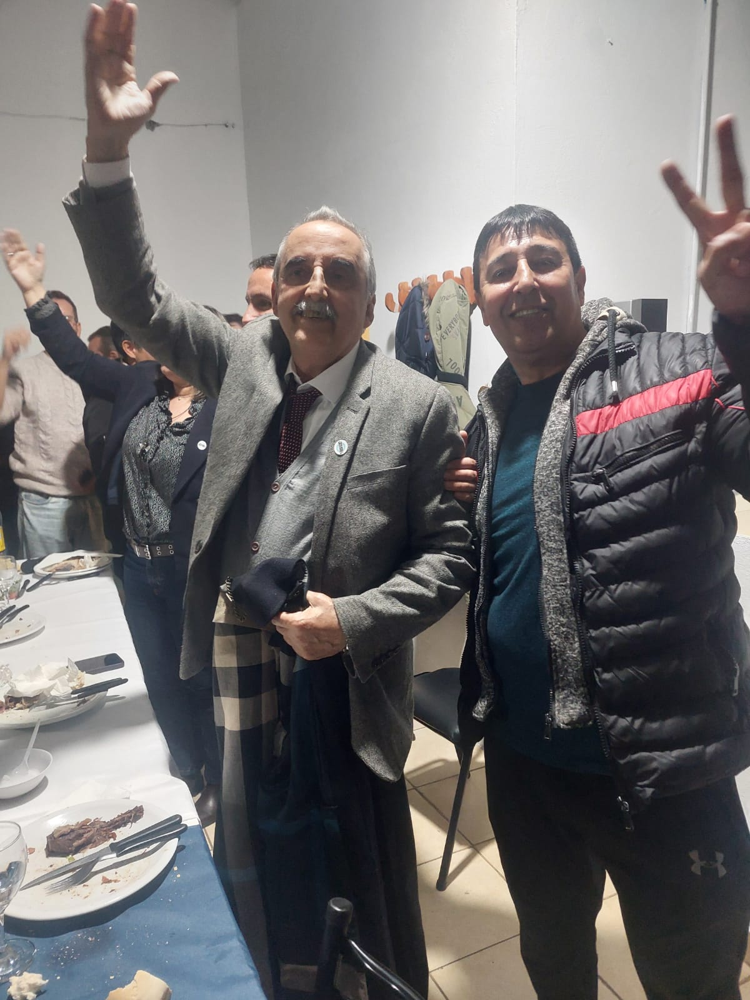
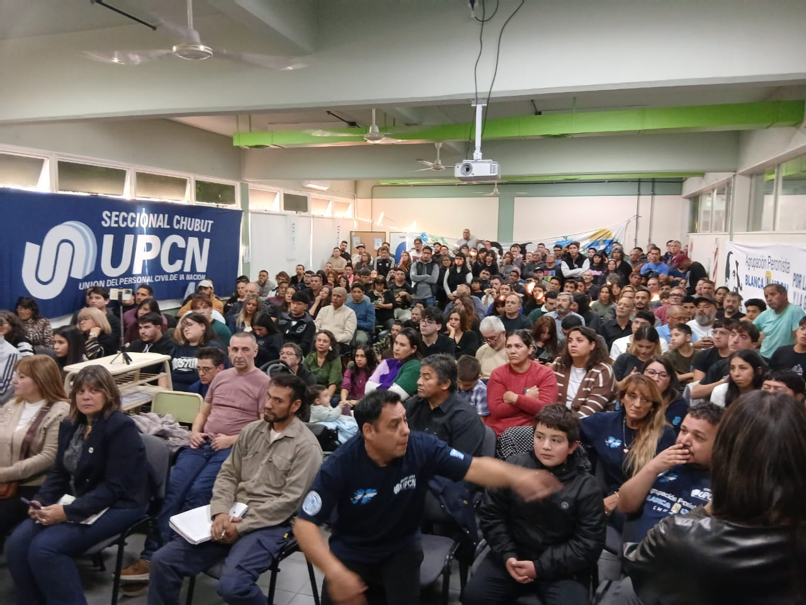
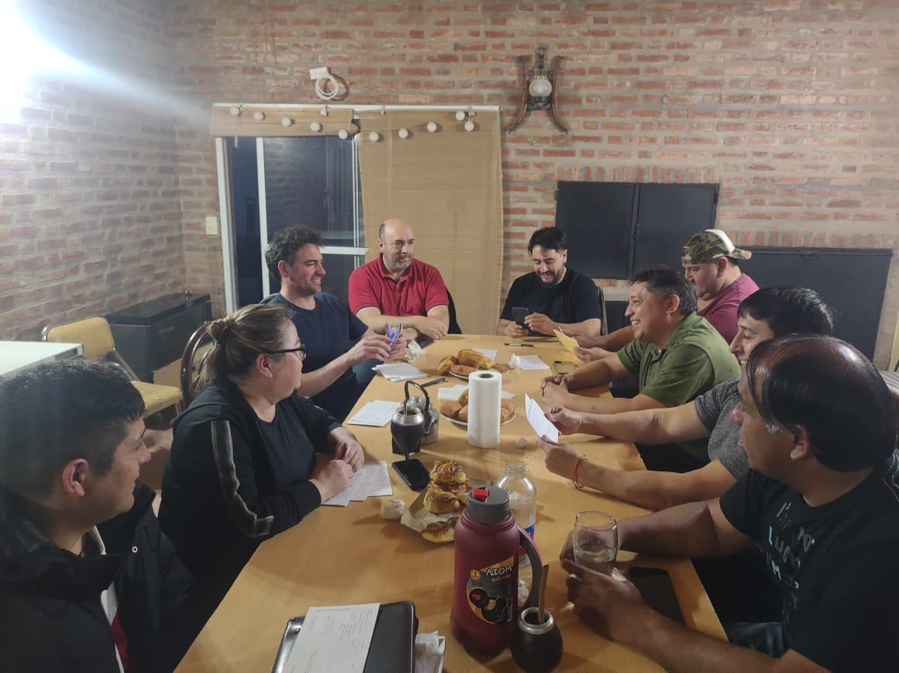
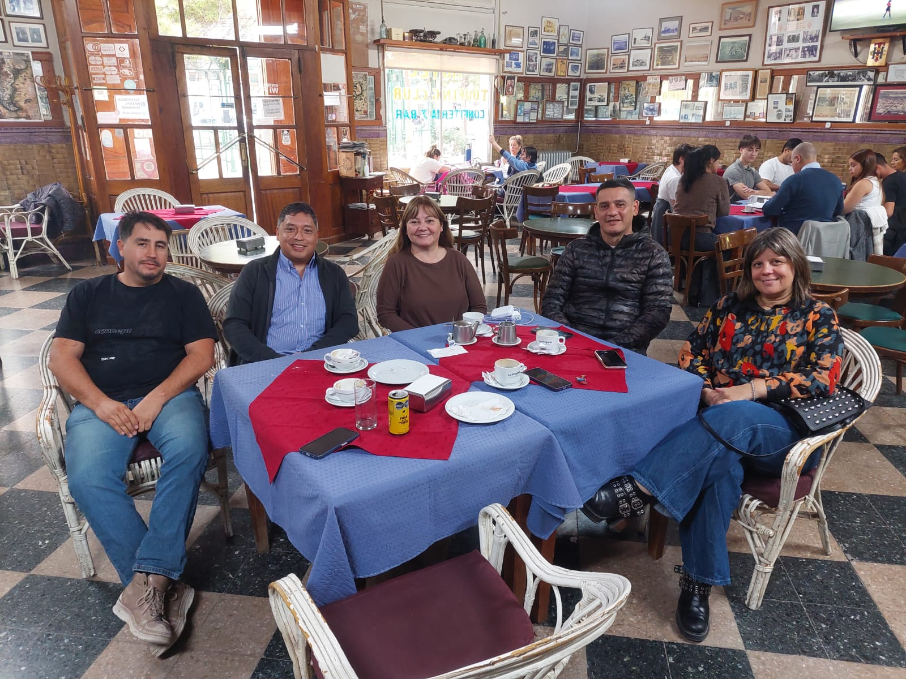
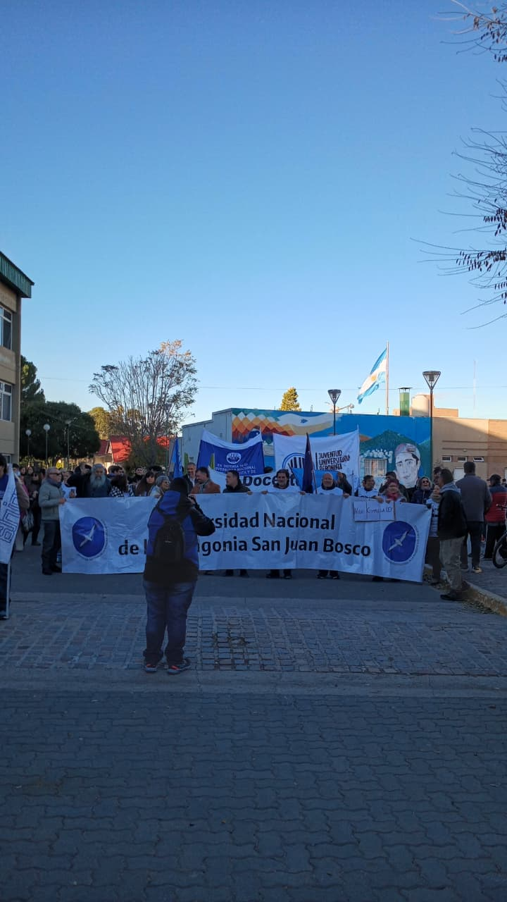

Peronistas de Principios y Valores Trelew
Por la felicidad del pueblo y la grandeza de la patria
Por la felicidad del pueblo y la grandeza de la patria
Principio y Valores de Trelew es un espacio peronista que reconocemos en el compañero Mario Guillermo Moreno a nuestro Conductor y referente político. Confiamos en integrar a nuestra ciudad de Trelew en un Plan Económico y Plan de Gobierno Peronista con la doctrina como elemento ordenar Nos proponemos trabajar por políticas inclusivas, transparentes y orientadas al bien común de nuestra comunidad.
Nuestros principios fundamentales están cimentados en la doctrina, las veinte verdades y los principios de la creación. Nos referenciamos en la gesta sanmartiniana, el bienestar y la armonía de nuestro pueblo, la reivindicación de nuestras Malvinas Argentinas y el respeto a nuestra celeste y blanca.
Creemos en la importancia de la educación, el trabajo, la integración nacional, el desarrollo industrial, la salud pública, la planificación urbana y la proyecion de la ciudad para hacer de Trelew un punto de referencia en nuestra Patagonia Argentina.
Conoce las diferentes áreas de Principio y Valores
Conducción política y dirección estratégica de nuestro espacio.
Espacios de participación y empoderamiento de las mujeres peronistas.
Articulación con los trabajadores y organizaciones sindicales.
Formación y participación de jóvenes peronistas en la política.
Articulación con empresarios y emprendedores peronistas.
Participación de profesionales y técnicos en la construcción política.
Articulación con movimientos y organizaciones de la sociedad civil.
Mesas temáticas de la rama
Análisis y propuestas en materia energética para la región.
Desarrollo del sector pesquero y agroindustrial patagónico.
Políticas mineras sustentables con perspectiva nacional y regional.
Seguimiento y propuestas vinculadas a la industria alumínica regional.
Promoción del turismo accesible y políticas de turismo social.
Gestión y planificación del agua en el Valle Inferior del Río Chubut.
Propuestas educativas para el desarrollo local y la formación ciudadana.
Políticas de desarrollo productivo y empleo en la región.
Ordenamiento territorial y desarrollo urbano de Trelew.
Propuestas en materia de seguridad ciudadana y prevención.







Accede a nuestros principales documentos y propuestas políticas.
Recursos útiles sobre política, participación ciudadana y desarrollo local.